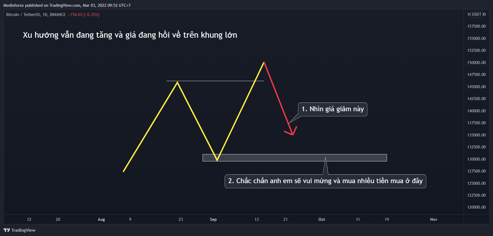
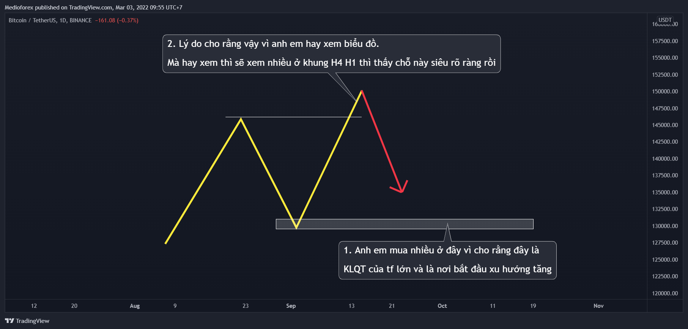
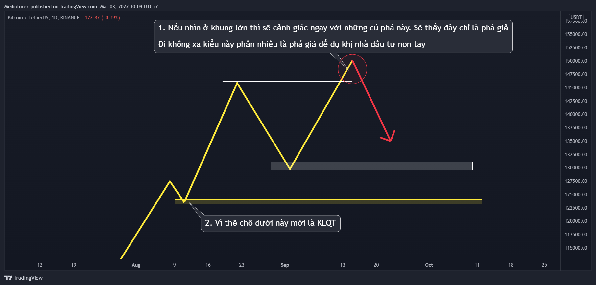
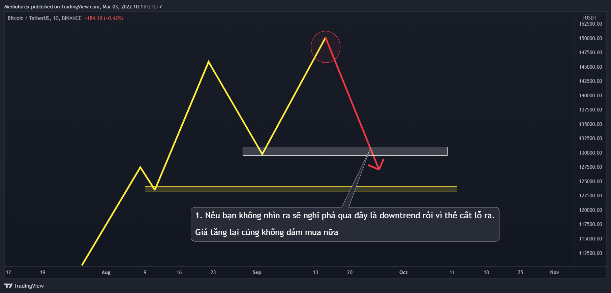
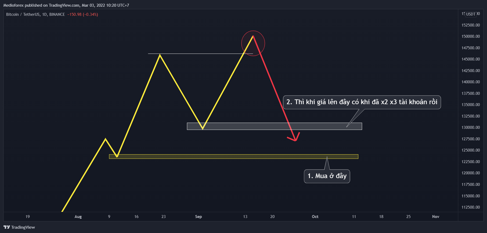
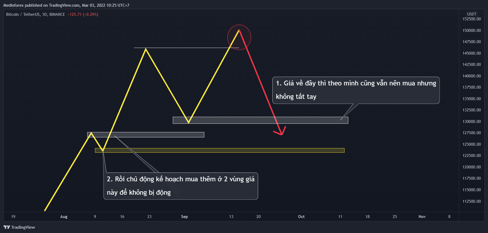
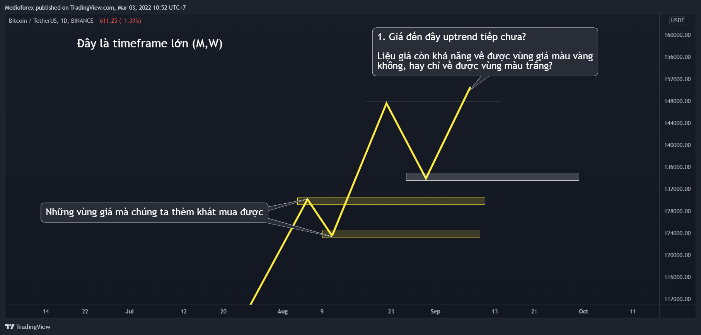
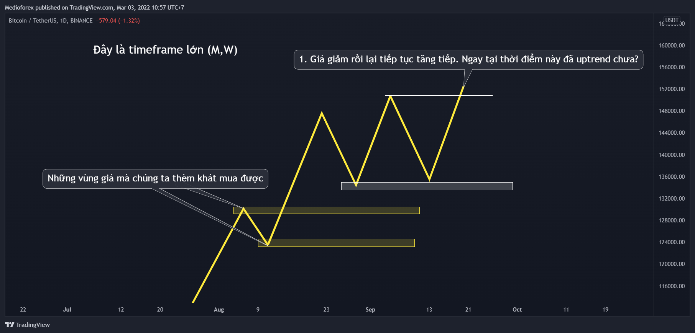
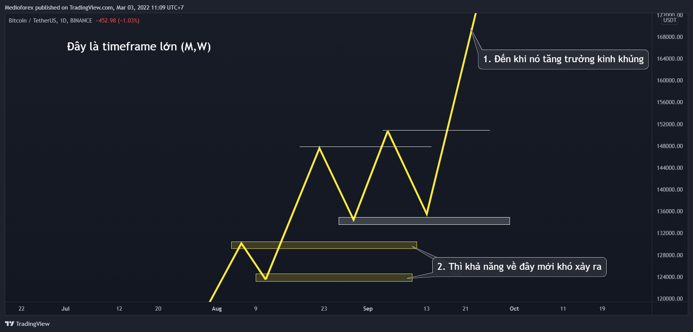

Chào mọi người, sau chuỗi bài về trading thì mình thì mình muốn nói sang đầu tư 1 chút cho nó đỡ chán, với cả thời điểm này cũng đang khá nhạy cảm nên có lẽ sẽ giúp ích cho người nào đó cần.
Bắt đầu nhé
Với quan điểm đầu tư cá nhân của mình thì khi đã đầu tư thì tỷ suất lợi nhuận cao thấp thì chưa nói tới, tùy mỗi người mà kỳ vọng con số khác nhau nhưng đã đầu tư thì đầu tiên là PHẢI nhàn đầu, khả năng có lời cao hơn khả năng thua lỗ, sau cùng mới là tỷ suất lợi nhuận.
Và chính vì yếu tố này mà phương pháp trung bình vốn được các chuyên gia khuyến nghị cho nhà đầu tư F0. Cách đầu tư này rất đơn giản, chả cần biết phân tích kỹ thuật, cũng chả cần quan tâm cả phân tích cơ bản, chỉ đơn giản là dành 1 khoản tiền cố định đầu tư vào thị trường sau 1 khoảng thời gian nhất định, cứ làm đều đặn như vậy mà không quan tâm xu hướng thị trường khi đó là gì vì giới chuyên gia cho rằng về lâu dài, thị trường luôn tăng trưởng.
Giống như việc mỗi tuần đều đầu tư vào thị trường 100$ và không quan tâm giá cả đang là bao nhiêu, nếu ở chứng khoán thì mua quỹ chỉ số (quỹ mô phỏng xu hướng thị trường), còn crypto thì mua Bitcoin.
DCA - Dollar Cost Averaging là chiến thuật tốt dành cho nhà đầu tư không chuyên
Đó là chiến thuật đầu tư tốt, không những mang về tiền bạc mà mang về cả sức khỏe và thời gian cho người không chuyên. Mình nghĩ đó là chiến thuật tốt nhất dành cho người mới, người không có thời gian học hỏi hoặc là không muốn bỏ thời gian để học mà muốn dành thời gian cho công việc chính đang làm. Mỗi tội để giàu bằng cách đầu tư như vậy thì sẽ hơi lâu. Chất lượng cuộc sống chắc chắn sẽ đi lên nhưng thay đổi từ từ chứ không thể nhanh được. Vì thế nên không nhiều người áp dụng chiến thuật này dù biết nó hiệu quả. Và mình cũng vậy 
Tuy chiến thuật đó nó hiệu quả, nó tốt nhưng chắc chắn mình sẽ không khuyên anh em đầu tư kiểu vậy. Khuyên kiểu vậy thì học làm gì cho phí thời gian. Chúng ta ở đây đều cố gắng đợi giá hồi về keylevel của khung lớn, cụ thể là tuần và tốt nhất là tháng thì mới mua nhiều để đạt hiệu quả tốt nhất.
Khung tuần thì rất dễ mua vì giá hồi về khung tuần không khó, mình thấy năm nào trong crypto cũng có 1 lần. Một kèo 1 năm đôi khi đã là đủ.
1 kèo 1 năm đôi khi là đủ đủ
Nhưng câu hỏi ở đây là liệu giá có hồi về khung tháng được không? Nghĩa là sẽ xảy ra 1 mùa đông downtrend dài tính theo năm không?
Câu hỏi này mình nghĩ đến nhà tạo lập thị trường cũng không biết được. Nhà tạo lập thị trường thì họ cũng phải lựa diễn biến tình hình khi đó mới quyết định chứ bản thân họ cũng chả biết được tương lai. Với mình thì chỉ đến khi nó phá khung tuần thì mới biết thôi.
 Từ đây nó lại nảy sinh thêm 1 câu hỏi nữa là nếu cứ để nhiều tiền đợi giá về khung tháng mà giá không về thì sao? Có nên đổ thêm tiền vào khung tuần hay không? Nhất là thời điểm hiện nay, chiến tranh, giá xăng dầu tăng, lạm phát tăng làm tiền để không bị mất giá trị.
Từ đây nó lại nảy sinh thêm 1 câu hỏi nữa là nếu cứ để nhiều tiền đợi giá về khung tháng mà giá không về thì sao? Có nên đổ thêm tiền vào khung tuần hay không? Nhất là thời điểm hiện nay, chiến tranh, giá xăng dầu tăng, lạm phát tăng làm tiền để không bị mất giá trị.
-
Nếu mình là người dân Ukraine hoặc người dân Nga thì mình all-in vào khung tuần luôn mà không cần nghĩ nhiều. Coin tụt thì lên lại còn nhanh, chứ đồng tiền quốc gia mà tụt thì lên lại lâu lắm.
-
Nhưng may mắn mình là người Việt Nam nên vẫn giữ được kế hoạch cũ. Mỗi tội là vẫn phải cân đo đong đếm làm sao để không khóc khi giá giảm vì không còn nhiều tiền mua giá tốt và cũng lại không buồn khi giá tăng vì đã không mua nhiều. Cân đối lại nhận định hiện tại để tăng hoặc giảm vốn đi cũng nhức não phết đấy.
Anh em chúng ta chắc chắn đều có 1 nhận định riêng là giá sẽ tăng hoặc tụt tiếp rồi. Và bài này cũng không phải 1 tí định hướng nào về việc nên mua thêm hay là nên bán bớt. Mua được mà nghĩ nó tăng tiếp thì đợi giá x tài khoản rồi chốt lời, không mua mà nghĩ nó xuống tiếp thì đợi giá về khung tháng mà mua thêm thôi.
Nhưng mà chắc chắn bạn sẽ gặp phải 2 vấn đề sau trong việc đầu tư khiến bạn dễ đưa ra quyết định sai từ đó phân bổ vốn chưa hợp lý hoặc đưa ra quyết định mua bán đổi coin bị hớ khiến downtrend bị chia tài khoản nhiều hơn bình thường mà uptrend cũng không lời lãi bao nhiêu (Cái này trade thì không bị mấy nhưng đầu tư lại bị khá nhiều). Và đây mới là nội dung chính của bài này
1. Vấn đề đầu tiên
Vấn đề đầu tiên nằm ở việc thường xuyên xem coinmarketcap (hoặc coingecko). Xem cái này để cập nhập thị trường nó chả có gì là không tốt cả. Mình ngày nào cũng xem.
Nhưng nếu bạn xem nhiều thì bạn sẽ dễ bị quá để ý đến thứ hạng coin mình nắm giữ trên bảng xếp hạng và tỉ lệ % tăng, giảm giá của coin mình với những coin khác. Rảnh mà ngắm nhiều rồi so sánh hàng ngày là cũng dễ mắc sai lầm lắm.
-
Thứ nhất làm vậy không phải chúng ta đang so sánh coin mình giữ với 1 đồng coin khác mà đang đi so sánh cùng lúc với rất nhiều coin khác. Làm vậy đảm bảo sẽ luôn bị thiệt.
-
Thứ hai là mỗi đồng coin nó sẽ đều có thời điểm tỏa sáng của riêng nó.
Đồng nào trước tăng mạnh mà giảm chưa về keylevel thì sẽ giảm nhanh hơn để về, đồng nào sắp về KL thì sẽ giảm ít hơn. Nếu chỉ nhìn giá thì sao biết được những cái đấy.
Giá giảm phụ thuộc vào việc nó đã về gần keylevel hay chưa (gần về vùng mua mạnh chưa), còn khi uptrend giá tăng thì phụ thuộc vào dòng tiền. Dòng tiền chưa về đến hệ sinh thái coin của bạn, chưa về coin bạn mua thì giá sẽ không thể tăng mạnh bằng những coin đang có dòng tiền đổ về. Thời khắc chưa đến thì buộc phải đợi thôi.
Thế nên khi downtrend thì đồng nào gần về KL thì nên mua, đồng nào chưa về thì đừng vội mua, cùng thời điểm nhưng vị thế của mỗi đồng là khác nhau. Còn khi uptrend cách đơn giản nhất đôi khi chính là không làm gì nếu bạn tin vào dự án coin của mình. Mình cũng từng lỡ vài cơ hội vì trót bán coin mình giữ để nhảy sang coin khác khi thấy nó cứ chậm rì rì khi so với những coin khác đang bay vun vút.
2. Vấn đề thứ hai
Vấn đề này do nhận định xu hướng sai vì nhìn ở khung thời gian nhỏ khi đầu tư (H4 H1).
Đây chính là vấn đề mà khi giá hồi rồi anh em tìm cơ hội mua thêm thì mua sai vùng giá. Hoặc giá tăng nhưng chưa thật sự uptrend mà anh em nghĩ đã uptrend rồi vội vã mua thêm. Từ đó khiến chia tài khoản nhiều lần rất là đáng tiếc và tai hại.
Đây là vấn đề của trader khi tham gia đầu tư vì trader hay có thói quen nhìn khung nhỏ.
Mình sẽ lấy ví dụ khi thị trường tăng và giảm để anh em cảnh giác nhé.
2.1 Khi thị trường giảm có cơ hội để mua


Những trường hợp này thì quá nửa là xác định sai KLQT vì hay nhìn khung nhỏ, khung nhỏ thì những chỗ phá đó nó đẹp thôi rồi, đẹp đến độ nhìn không có 1 chút nghi vấn nào.
Cần lưu ý là với những cú giá hồi ở khung lớn, giá giảm mà bị chia tài khoản vài lần ấy thì chúng ta chỉ nên nhìn ở khung lớn thôi như khung tuần, khung 2D và thấp nhất chỉ được xuống 1D thôi.
Kéo lên khung lớn làm sao mà cả xu hướng bạn có thể cho nó hiển thị được trên màn hình máy tính của bạn. Giống như việc bạn đừng ra xa để nhìn được tổng thể cả 1 bức tranh thì mọi thứ nó sẽ rõ ràng. Như việc nhìn khung lớn thì sẽ rõ ràng ngay

Nếu bạn nhìn ra thì sẽ mua được vùng giá rất tốt. (Mua ở giá thấp chỉ cần cách nhau 1 chút thôi cũng làm lên khác biệt lớn lắm).
Còn nếu không nhìn ra thì sẽ cho rằng là downtrend rồi

Vì thế lưu ý khi giá hồi mạnh ở khung lớn thì bạn chỉ nên nhìn khung lớn. Cái này mình nói ở nhiều bài rồi nhưng mình tin chắc kiểu gì cũng có nhiều người không để ý cái đấy. Ngày nào cũng quan sát thị trường nên sẽ hay nhìn H4 H1 rồi bị lừa bởi phá vỡ giả khung lớn.
Việc mua ở vùng giá thấp tuy cách biệt có vài $ thôi nhưng khác biệt lớn lắm. Mua sai có thể bị chia tài khoản ngay lập tức

Vậy thì mua như nào cho hợp lý?
Theo mình thì nên chia vốn hợp lý mua cả 3 vùng giá như sau

Tất nhiên ai thích ăn đậm thì có thể chỉ mua 1 lần nhiều tiền ở KLQT nhưng cái gì cũng có 2 mặt của nó, nên tùy phong cách mà bạn có thể tự cân nhắc nhé.
2.2 Khi thị trường tăng
Khi giá giảm số đông chắc chắn sẽ lo sợ, giá về đến KLQT, đỉnh cũ khung lớn rồi, thấp vậy rồi mà nhiều người cũng không dám mua. Nhưng giá mà chớm phá đỉnh thì đủ tin tức, báo chí đưa tin rầm rộ phá đỉnh rồi, uptrend tiếp rồi thì số đông lại sướng, hô hào nhau múc với xúc. Tay to nhiều tiền chốt lời ở đây thì sẽ thoát được hàng rất nhanh thôi.
Vậy thì câu hỏi ở đây là khi nào thị trường thực sự uptrend tiếp tục?
Câu này khó. Nhưng mình sẽ đưa góc nhìn của mình để bạn không bị đi theo đám đông hô hào ngoài kia.

Giá mới chớm phá đỉnh cũ thì nó vẫn còn có khả năng sau đấy tự nhiên đâm mạnh trở xuống về vùng màu vàng.

OK giờ giá lại tăng tiếp phá đỉnh. Thế thì ngay tại thời điểm đó nó đã thực sự uptrend hay chưa. Có thể có mà có thể không nhé.
Sau đấy mà nó lại đâm xuống ngay thì vẫn có khả năng về vùng giá màu vàng.
Kể cả có thêm lần nữa xảy ra như vậy thì cũng vẫn chưa thể khẳng định nó sẽ uptrend. Đừng vì giá mới vừa phá đỉnh cũ mà đã khẳng định nó uptrend ngay. Vẫn còn khả năng xảy ra trường hợp chạy ruộng bậc thang. Mà ruộng bậc thang biểu hiện cho sự tăng trưởng không bền vững. Mà không bền vững thì nguy cơ vẫn có thể xảy ra.
Phải đến khi nó tăng trưởng thật mạnh mẽ thì nguy cơ về vùng màu vàng mới giảm.

Tất nhiên mọi thứ anh em vẫn chỉ nên nhìn ở khung lớn nhé. Hãy nhớ là giá mới vừa phá đỉnh thì không nên khẳng định điều gì quá sớm, nguy cơ luôn hiện hữu nên đừng chủ quan fomo theo đám đông mà bỏ quên nguy cơ. Cần nhớ thêm là quản lý vốn không phải từ mỗi việc mua trung bình giá mà còn từ việc chốt lời từng phần nữa.
Kết luận
Đó là những cơ hội tiềm năng và nguy cơ tiềm ẩn có thể xảy ra. Nếu luôn chỉ nhìn bức tranh lớn thì không mắc sai lầm đâu. Nhưng việc chờ đợi , cộng thêm việc chúng ta cũng đang là trader nữa khiến chúng ta có xu hướng nhìn cả khung nhỏ vì vậy mới bị mắc sai lầm.
Vậy nên mà trước khi anh em quyết định đầu tư, mua bán cái gì thì hãy nhớ kéo lên khung lớn nhìn lại và đánh giá từ đầu để nhìn thấy những nguy cơ cũng như quản lý vốn hợp lý, từ đó tránh sợ hãi khi cơ hội đang đến và tránh fomo khi nguy cơ vẫn còn. Chúc anh em quản lý vốn hợp lý, quyết đoán đúng nơi và sợ hãi đúng lúc.